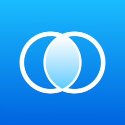

Demo · Junction 2026 · Powerpuff Boys
Ask about signs, numbers, and times you've seen.
Pick a scene to start. Faces are blurred on the phone before a frame is analysed.
MUISTI is an iPhone app for Ray-Ban Meta glasses. It keeps what the glasses see (signs, labels, screens, where things are) and answers from that. Pick a scene below and watch the phone, or type a question into it.
Type into the phone, or tap a question. Answers come from the demo memory on the left (Memory tab).